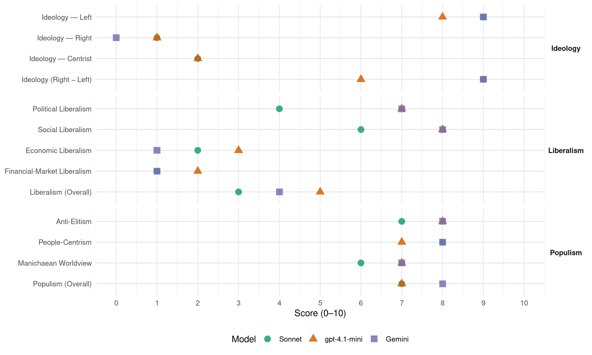

PCF (France, 1988)
manifesto_id 31220_198806
Get full text: This site shows derived annotations and short verbatim quotes only. The full manifesto text is © Manifesto Project / WZB — obtain it via manifesto-project.wzb.eu using the manifesto_id above.
Headline scores
| Dimension | Sonnet | gpt-4.1-mini | Gemini |
|---|---|---|---|
| Populism (Overall) | 7.0 | 7.0 | 8.0 |
| Anti-Elitism | 7.0 | 8.0 | 8.0 |
| People-Centrism | 8.0 | 7.0 | 8.0 |
| Manichaean Worldview | 6.0 | 7.0 | 7.0 |
| Ideology (Right − Left) | 9.0 | 6.0 | 9.0 |
| Liberalism (Overall) | 3.0 | 5.0 | 4.0 |
| Political Liberalism | 4.0 | 7.0 | 7.0 |
| Social Liberalism | 6.0 | 8.0 | 8.0 |
| Economic Liberalism | 2.0 | 3.0 | 1.0 |
| Financial-Market Liberalism | 1.0 | 2.0 | 1.0 |
Evidence per dimension
Economic Liberalism
Gemini · score 1.0 · verified · chunk 1
“défendant le secteur public et nationalisé”
stoppant les mesures de bradage et de vente de nos entreprises, en défendant le secteur public et nationalisé
gpt-4.1-mini · score 3.0 · verified · chunk 1
“refus de toute hausse des loyers et des charges”
Il en est ainsi du refus de toute hausse des loyers et des charges, de la baisse de 10% des loyers HLM en réduisant l’intérêt des emprunts de 1%, de l’abrogation de la pratique du surloyer, de la revalorisation de 15% de l’APL et de l’Allocation logement.
Sonnet · score 2.0 · verified · chunk 1
“défendant le secteur public et nationalisé”
en stoppant les mesures de bradage et de vente de nos entreprises, en défendant le secteur public et nationalisé, qui a un rôle moteur à jouer
Financial-Market Liberalism
Gemini · score 1.0 · verified · chunk 1
“taxation des sorties de capitaux”
l’existence de l’emprunt Giscard, réclamé la suppression de l’avoir fiscal et la taxation des sorties de capitaux
gpt-4.1-mini · score 2.0 · verified · chunk 1
“taxation des sorties de capitaux”
Sans le groupe communiste, aucune voix n’aurait dénoncé à l’Assemblée nationale l’existence de l’emprunt Giscard, réclamé la suppression de l’avoir fiscal et la taxation des sorties de capitaux, proposé la réduction de l’impôt sur le revenu pour les chômeurs et les retraités.
Sonnet · score 1.0 · verified · chunk 1
“la taxation des sorties de capitaux”
aucune voix n’aurait dénoncé à l’Assemblée nationale l’existence de l’emprunt Giscard, réclamé la suppression de l’avoir fiscal et la taxation des sorties de capitaux
Political Liberalism
Gemini · score 7.0 · verified · chunk 1
“démocratiser les institutions”
rompre toutes les relations avec le régime d’apartheid. II en est ainsi enfin de la paix et du désarmement. Nous disons que la France doit réviser la loi de programmation militaire, arrêter ses essais nucléaires, soutenir toute initiative allant dans le sens du désarmement, œuvrer pour la disparition de toutes les armes nucléaires d’ici à l’an 2000, refuser l’armement de l’espace et toute armée européenne. LES CANDIDATS DE RASSEMBLEMENT DES FORCES DE GAUCHE Chaque voix qui se portera sur les candidates et les candidats communistes sera une voix qui appuiera ces propositions en faveur du progrès social, national et démocratique, et l’exigence du changement de politique, plus nécessaire que jamais. Ce sera une voix d’opposition frontale à la droite, aux Chirac, aux Barre, aux Giscard d’Estaing et à tout ce qu’ils représentent. Ce sera une voix efficace pour repousser, aujourd’hui et demain, les assauts de l’extrême droite. Car, s’il n’y a pas plus haineusement anticommuniste que Le Pen, c’est parce qu’il n’y a pas plus résolument anti-Le Pen que le Parti communiste. A l’heure où la France connaît cette situation honteuse: être le pays d’Europe où l’extrême droite raciste et fascisante fait son meilleur score, le Parti communiste peut s’honorer d’être le seul à n’avoir jamais «joué» avec le poison de la haine, du racisme, de l’intolérance. Voter pour les candidats communistes, ce sera choisir le seul moyen efficace de faire reculer l’extrême droite. Ce sera du même coup affirmer l’exigence d’une politique de gauche, et de l’union de toutes les forces populaires pour la promouvoir. Nous l’avons dit à notre 26e Congrès, nous, communistes, nous luttons pour une majorité, un gouvernement de changement. II ne faut, certes, laisser place à aucune illusion: l’élection présidentielle n’a pas permis de déboucher sur cette solution, et ces élections législatives ne le permettront pas non plus, puisque François Mitterrand et les dirigeants socialistes, qui occupent dans la période actuelle une position dominante, n’en veulent à aucun prix. Mais pour toutes celles et tous ceux - et ils sont nombreux - qui ne veulent pas que «la gauche» ne soit plus désormais qu’une référence abstraite, mais qu’elle soit une réalité vivante au cœur du mouvement populaire, il est nécessaire, il est indispensable que l’exigence d’une union des forces populaires pour une politique de gauche marque ces élections législatives. Elle ne s’exprimera que par le vote communiste. Les candidates et les candidats présentés par le Parti communiste sont bien les <<candidats de rassemblement des forces de gauche». Et on peut être assuré que, demain, les députés communistes appuieront à l’Assemblée tout ce qui ira dans le sens d’une politique de gauche et combattront tout ce qui ira à son encontre. Pour tout ce qui va se passer dans les années qui viennent, l’assurance pour qui veut se défendre, pour qui veut voter à gauche, c’est le vote communiste le 5 juin. CELLES ET CEUX QUE LE VOTE COMMUNISTE PEUT RASSEMBLER Les électrices et las électeurs que ce vote a vocation à rassembler sont d’abord, naturellement, celles et ceux qui ont voté le 24 avril dernier pour André Lajoinie. Ils ont, dans des conditions particulièrement difficiles, effectue UN CHoix clair et de grande portée. IlS ont toutes les raison de le réaffirmer quelques semaines après. II y a aussi celles et ceux qui votent habituellement communiste et qui, à la question: «Quel président de la République voulez-vous?» ont répondu, dès le premier tour: «François Mitterrand». Ils n’ont nullement voulu, par là même, condamner leur député, leur conseiller régional ou général, leur maire communistes. Ils leur en veulent d’autant moins que, le 8 mai, avec eux, ils ont battu Chirac. Aujourd’hui, François Mitterrand est à l’Elysée. Ils peuvent dont, en toute tranquillité, se doter de défenseurs efficaces, dévoués et compétents: de députés communistes. Il y a également des centaines de milliers de jeunes qui ont voté pour François Mitterrand au premier tour, souvent par peur de Le Pen. Aujourd’hui, le danger est à leurs yeux passé: Chirac est battu et Le Pen ne sera pas ministre. Nous pouvons donc nous adresser à eux avec audace pour leur faire connaître notre politique. Beaucoup de ces jeunes n’éprouvent que colère et dégoût devant une société qui fait grossir chaque jour davantage le nombre des chômeurs, des pauvres, des exclus en tout genre. Comme nous, ces jeunes détestent le racisme et l’intolérance. Comme nous, ils aspirent à un monde d’amitié entre les peuples, de solidarité, de paix. Comme nous, ils se méfient des belles paroles, veulent des actes, du «concrete». Nous pouvons en gagner beaucoup au vote pour nos candidats. Il y a aussi des millions d’électrices et d’électeurs de gauche qui ne partagent pas l’ensemble de nos idées et ont des divergences de vues, parfois même des griefs à notre encontre. Beaucoup ne nous ont pas crus quand nous disions que François Mitterrand se préparait à gouverner avec la droite et nous ont alors reproché de faire ce qu’ils appelaient «un procès d’intention». Aujourd’hui, les faits sont là: c’est François Mitterrand lui-même qui a expliqué qu’il provoquait ces élections législatives pour permettre une alliance durable du Parti socialiste avec une partie de la droite. Adressons-nous dont à ces électrices et à ces électeurs pour leur dire: «Reconnaissez-le, vous ne vous avions pas trompés. Mais nous n’en sommes pas heureux pour autant. Ce qui se passe actuellement n’efface pas nos différences, et peut-être NOS désaccords. Mais que pèsent nos divergences face à ce qui nous tient à cœur aux uns et aux autres: la gauche et son avenir? Voter pour les candidats communistes le 5 juin, ce sera donner un signal au président de la République, et lui indiquer que c’est la voie d’une politique de gauche qu’on souhaite voir prendre au pays.» Une campagne d’une extrême brièveté Tels sont les grands axes de notre campagne. Il va de soi que si ces orientations sont celles, de tous nos candidats, leur mise en œuvre doit tenir le plus grand compte du caractère spécifique de chaque circonscription, des problèmes qui y sont posés, des rapports de force qui s’y expriment. En ce sens, il appartient aux directions fédérales, aux communistes de chaque circonscription et, naturellement, aux candidats d’apporter les ajustements indispensables. Ils ont toute latitude pour le faire. Cela dit, un impératif s’impose à tous: l’extrême brièveté de la campagne. Il ne nous reste déjà plus aujourd’hui que dix-huit jours d’ici au premier tour, dont le week-end de la Pentecôte. Je l’ai indiqué tout à l’heure, c’est un handicap évident pour développer l’activité du Parti avec toute l’ampleur que nous souhaiterions. Je tiens d’ailleurs à souligner que cette brièveté n’est pas seulement dommageable pour le caractère démocratique du débat que nous voulons avoir avec les gens, mais aussi pour le fonctionnement même de notre parti. C’est peut-être négligeable pour les autres formations politiques; pas pour nous. Nos statuts prévoient, en effet, que «les candidatures aux différentes élections sont discutées par les cellules» et que «le Comité central ratifie, après décision des comités de section et des comités fédéraux, les candidatures au Parlement». Or, la liste des candidats doit être déposée samedi au plus tard. Il faut faire imprimer au plus vite affiches, professions de foi et bulletins de vote. Nous n’avons donc pas pu, en dépit des efforts des décisions fédérales, suivre partout parfaitement ces règles. Nous le déplorons, mais chacun en coMPREND les raisons. Nous n’avons pas choisi les conditions de précipitation dans lesquelles cette campagne doit être menée. Tous les communistes à l’offensive Cela dit, nous sommes décidés, comme le Bureau politique l’a souligné, à y faire face dans un esprit offensif. Nous l’avons dit, nous aurions évidemment préféré que notre résultat à l’élection présidentielle fût meilleur. Pour autant, avons-nous ajouté, il n’est pas à sous-estimer. Notre campagne nous a permis de nouer des liens prometteurs avec les travailleurs de toutes catégories dans les entreprises, avec les familles populaires dans les cités, avec des millions d’hommes, de femmes, de jeunes. II nous appartient de poursuivre cette activité, de faire fructifier ce que nous avons commencé à semer. Pour y parvenir, nous disposons d’un outil incomparable: la force de notre parti. Comme nous l’avions dit lors du Comité central du 27 avril, celui-ci est sorti raffermi de la campagne électorale qu’il a menée. II est uni sur la politique à mettre en œuvre. Il s’est totalement impliqué dans un style de travail nouveau. C’est un atout important qu’il est possible de mettre en mouvement sans délai. II nous faut donc, comme nous avons commencé à le faire, tourner résolument le Parti vers l’extérieur, vers les gens, multiplier les initiatives visant à faire connaître et soutenir notre politique et nos candidats. Nous avions créé de nombreux points de rencontre dans les entreprises, les cités, les quartiers. II faut dans ces deux semaines et demie les maintenir et les multiplier, ce qui ne s’oppose nullement aux autres formes d’activités publiques, tels les meetings ou les rencontres dans les entreprises et les quartiers. Nous devons également veiller, avec une insistance particulière, à ne négliger aucune force disponible en faveur du vote communiste. Il nous faut, dans toute la mesure du possible, faire en sorte que chaque adhérent de notre parti ait la tâche qui correspond le mieux à ce qu’il peut apporter et que tous, sans exception, soient impliqués d’une manière ou d’une autre dans la campagne. Cela exige à la fois minutie et rapidité. C’est une condition essentielle de l’efficacité et du caractère durable de notre travail. Dans la grande majorité des fédérations, les choses sont à présent lancées, les candidats désignés. Il appartient au Comité central et à chacun de ses membres de jouer pleinement leur rôle et de s’engager à fond dans cette nouvelle bataille.
gpt-4.1-mini · score 7.0 · verified · chunk 1
“respecter partout les acquis sociaux, les statuts, les conventions collectives”
Il en est ainsi de la défense de toutes les libertés. La France n’a pas d’avenir sans essor de la démocratie. Nous proposons de faire respecter partout les acquis sociaux, les statuts, les conventions collectives et de les améliorer, d’empêcher tout recul social lié à «l’Europe de 1992», de garantir les libertés syndicales et le droit de grève, de réintégrer les militants syndicaux licenciés et d’annuler les sanctions et poursuites à leur encontre, d’en finir avec toutes les discriminations fondées sur le sexe, l’âge ou l’ORIGINE, DE COMbattre résolument le racisme, de démocratiser les institutions, de préserver la totale liberté d’action pour la France, de rompre toutes les relations avec le régime d’apartheid.
Sonnet · score 4.0 · verified · chunk 1
“démocratiser les institutions”
de garantir les libertés syndicales et le droit de grève, de réintégrer les militants syndicaux licenciés et d’annuler les sanctions et poursuites à leur encontre, de démocratiser les institutions
Liberalism (Overall)
Gemini · score 4.0 · verified · chunk 1
“défendant le secteur public et nationalisé”
stoppant les mesures de bradage et de vente de nos entreprises, en défendant le secteur public et nationalisé
gpt-4.1-mini · score 5.0 · verified · chunk 1
“faire respecter partout les acquis sociaux, les statuts, les conventions collectives”
Il en est ainsi de la défense de toutes les libertés. La France n’a pas d’avenir sans essor de la démocratie. Nous proposons de faire respecter partout les acquis sociaux, les statuts, les conventions collectives et de les améliorer, d’empêcher tout recul social lié à «l’Europe de 1992», de garantir les libertés syndicales et le droit de grève, de réintégrer les militants syndicaux licenciés et d’annuler les sanctions et poursuites à leur encontre, d’en finir avec toutes les discriminations fondées sur le sexe, l’âge ou l’ORIGINE, DE COMbattre résolument le racisme, de démocratiser les institutions, de préserver la totale liberté d’action pour la France, de rompre toutes les relations avec le régime d’apartheid.
Sonnet · score 3.0 · verified · chunk 1
“assurer la liberté de circulation aux capitaux”
Qu’il s’agit d’assurer la liberté de circulation aux capitaux et de nouveaux avantages fiscaux à leurs détenteurs — framed as a negative consequence to be opposed
Anti-Elitism
Gemini · score 8.0 · verified · chunk 1
“l’opposition sans concession à la politique du capital”
Retenons que l’opposition sans concession à la politique du capital et à la droite dans toutes ses composantes
gpt-4.1-mini · score 8.0 · verified · chunk 1
“l’opposition sans concession à la politique du capital et à la droite”
Retenons que l’opposition sans concession à la politique du capital et à la droite dans toutes ses composantes - RPR, UDF, Front national -, la volonté de contribuer à l’union la plus large des forces populaires pour une autre politique, qui sont l’âme de notre combat, ont été au centre de notre action, au premier comme au second tour.
Sonnet · score 7.0 · verified · chunk 1
“l’opposition sans concession à la politique du capital”
Retenons que l’opposition sans concession à la politique du capital et à la droite dans toutes ses composantes - RPR, UDF, Front national -
Ideology — Centrist
gpt-4.1-mini · score 2.0 · verified · chunk 1
“le «centre» est tout entier à droite”
Le «centre» est tout entier à droite On voit donc bien que les difficultés qui entravent la formation de cette alliance nouvelle ne portent pas sur la politique que suivrait cette coalition: l’échéance de 1992 et ce qu’elle implique a été le thème commun de la campagne de François Mitterrand, de Jacques Chirac et de Raymond Barre, à un point tel qu’un commentateur a pu parler, à ce propos, d’un véritable «programme commun» à ces trois candidats.
Sonnet · score 2.0 · verified · chunk 1
“ce «centre»-là est tout entier à droite”
image qu’on DONNE d’un «centre» à mi-chemin entre la droite et la gauche est une totale fiction: ce «centre»-là - ses animateurs comme son électorat - est tout entier à droite
Ideology — Left
Gemini · score 9.0 · verified · chunk 1
“la voix des salariés, des chômeurs, des retraités”
faire entendre une voix différente: la voix des salariés, des chômeurs, des retraités, des jeunes qui rencontrent tant de difficultés
gpt-4.1-mini · score 8.0 · verified · chunk 1
“combat contre la droite, sa politique, ses dirigeants”
Il est donc hors de question que nous renoncions à cette lutte contre la droite, sa politique, ses dirigeants quels qu’ils soient. Et cela pour une raison simple: notre parti agit en faveur du rassemblement des forces de gauche pour changer de politique.
Sonnet · score 9.0 · verified · chunk 1
“faire cotiser les revenus financiers autant que les salaires”
Nous proposons de faire cotiser les revenus financiers autant que les salaires, soit à 12,5%. Ainsi les prestations pourront être améliorées
Ideology (Right − Left)
Gemini · score 9.0 · verified · chunk 1
“l’exigence d’une politique de gauche”
Voter pour les candidats communistes, ce sera choisir le seul moyen efficace de faire reculer l’extrême droite. Ce sera du même coup affirmer l’exigence d’une politique de gauche
gpt-4.1-mini · score 6.0 · verified · chunk 1
“le «centre» est tout entier à droite”
Le «centre» est tout entier à droite On voit donc bien que les difficultés qui entravent la formation de cette alliance nouvelle ne portent pas sur la politique que suivrait cette coalition: l’échéance de 1992 et ce qu’elle implique a été le thème commun de la campagne de François Mitterrand, de Jacques Chirac et de Raymond Barre, à un point tel qu’un commentateur a pu parler, à ce propos, d’un véritable «programme commun» à ces trois candidats.
Sonnet · score 9.0 · verified · chunk 1
“rassemblement des forces de gauche”
Les candidates et les candidats présentés par le Parti communiste sont bien les «candidats de rassemblement des forces de gauche»
Ideology — Right
Gemini · score 0.0 · verified · chunk 1
“combattre résolument le racisme”
d’en finir avec toutes les discriminations fondées sur le sexe, l’âge ou l’ORIGINE, DE COMbattre résolument le racisme
gpt-4.1-mini · score 1.0 · verified · chunk 1
“repousser, aujourd’hui et demain, les assauts de l’extrême droite”
Ce sera une voix d’opposition frontale à la droite, aux Chirac, aux Barre, aux Giscard d’Estaing et à tout ce qu’ils représentent. Ce sera une voix efficace pour repousser, aujourd’hui et demain, les assauts de l’extrême droite.
Sonnet · score 1.0 · verified · chunk 1
“combattre résolument le racisme”
d’en finir avec toutes les discriminations fondées sur le sexe, l’âge ou l’ORIGINE, DE COMbattre résolument le racisme
Manichaean Worldview
Gemini · score 7.0 · verified · chunk 1
“l’aggravation infernale de la politique actuelle”
une majorité favorable à l’aggravation infernale de la politique actuelle sera toujours assurée, quoi qu’il arrive.
gpt-4.1-mini · score 7.0 · verified · chunk 1
“lutte contre la droite, sa politique, ses dirigeants”
Il est donc hors de question que nous renoncions à cette lutte contre la droite, sa politique, ses dirigeants quels qu’ils soient. Et cela pour une raison simple: notre parti agit en faveur du rassemblement des forces de gauche pour changer de politique.
Sonnet · score 6.0 · verified · chunk 1
“Notre adversaire est, et demeure, la droite”
Bien évidemment, le Parti communiste ne saurait se rallier à une telle coalition. Notre adversaire est, et demeure, la droite.
People-Centrism
Gemini · score 8.0 · verified · chunk 1
“le rassemblement de toutes les forces populaires”
Nous avons indiqué la voie pour y parvenir: le rassemblement de toutes les forces populaires. C’est en effet par leur union
gpt-4.1-mini · score 7.0 · verified · chunk 1
“le rassemblement de toutes les forces populaires”
Nous avons indiqué la voie pour y parvenir: le rassemblement de toutes les forces populaires. C’est en effet par leur union dans l’action pour se défendre, par leur union dans l’action pour que ça change que ces forces pourront se ressaisir, battre en brèche la politique de la droite, créer les conditions d’une nouvelle perspective à gauche et repartir de l’avant.
Sonnet · score 8.0 · verified · chunk 1
“la voix des salariés, des chômeurs, des retraités”
les candidates et candidats communistes vont faire entendre une voix différente: la voix des salariés, des chômeurs, des retraités, des jeunes
Populism (Overall)
Gemini · score 8.0 · verified · chunk 1
“servir les intérêts populaires et nationaux”
n’ont qu’une boussole: servir les intérêts populaires et nationaux. Nous ne demandons pas, de ce point de vue
gpt-4.1-mini · score 7.0 · verified · chunk 1
“l’opposition sans concession à la politique du capital et à la droite”
Retenons que l’opposition sans concession à la politique du capital et à la droite dans toutes ses composantes - RPR, UDF, Front national -, la volonté de contribuer à l’union la plus large des forces populaires pour une autre politique, qui sont l’âme de notre combat, ont été au centre de notre action, au premier comme au second tour.
Sonnet · score 7.0 · verified · chunk 1
“servir les intérêts populaires et nationaux”
n’ont qu’une boussole: servir les intérêts populaires et nationaux. Nous ne demandons pas, de ce point de vue, qu’on nous croie sur parole
Social Liberalism